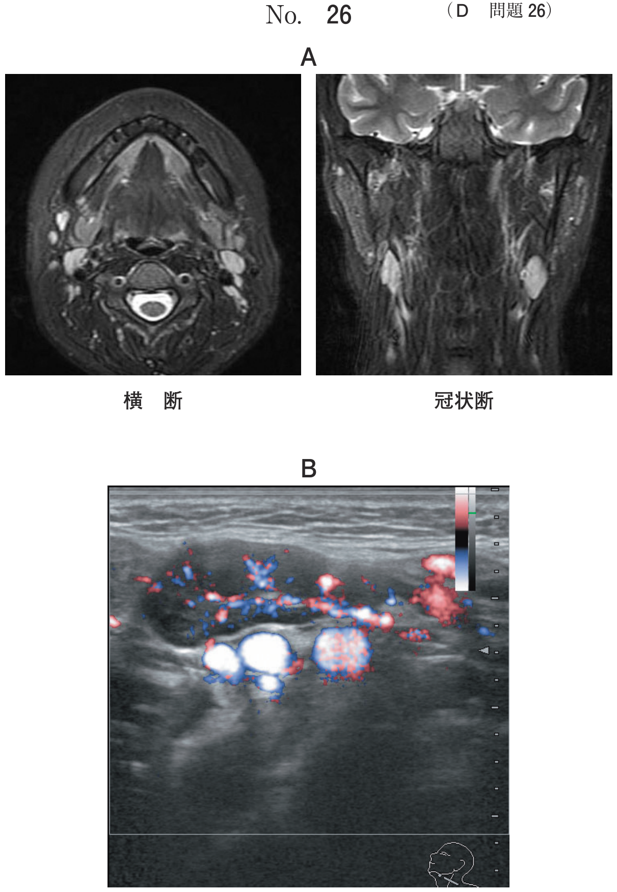
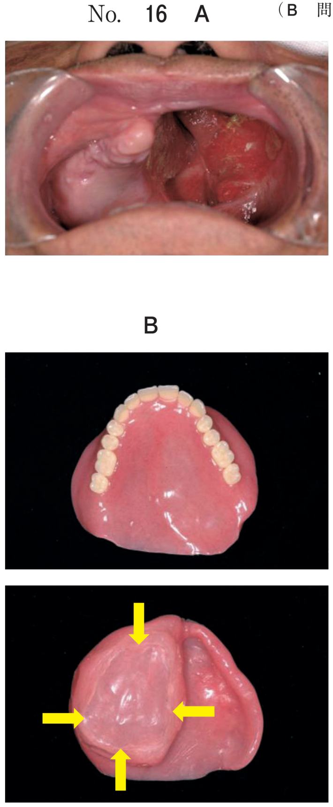
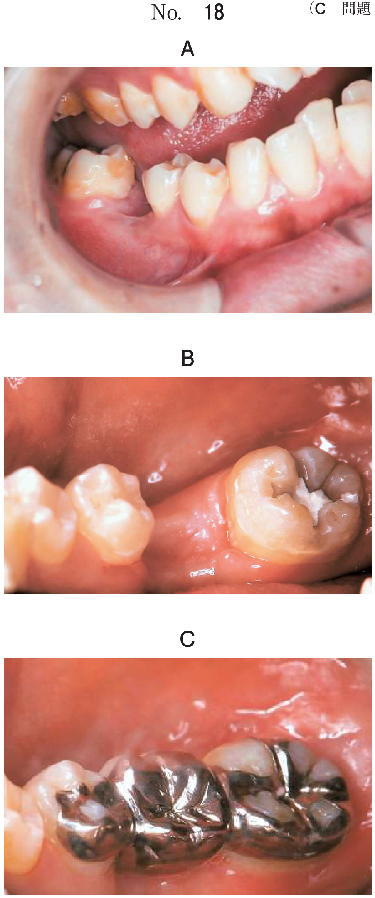
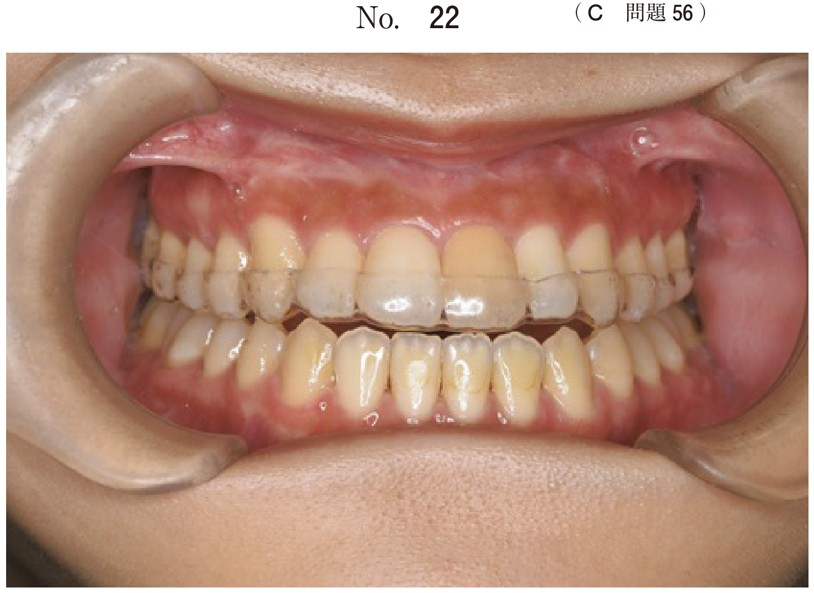

類天疱瘡（pemphigoid）は、天疱瘡に似た臨床所見を呈するが棘融解を伴わない点で異なる。表皮や粘膜の上皮下に水疱を形成する自己免疫疾患で、基底膜部の抗体により発症する。天疱瘡に比べて予後は良好である。
基底膜のヘミデスモゾーム構成タンパク質が標的となる。
BP180でなく基底膜部成分のラミニンと反応するIgG抗体をもつものが10〜20%存在する。
| 尋常性天疱瘡 | 類天疱瘡 | |
|---|---|---|
| 水疱の位置 | 上皮内（棘細胞層） | 上皮下（基底膜部） |
| 棘融解 | あり | なし |
| 自己抗体標的 | Dsg1, Dsg3 | BP180, BP230 |
| 蛍光抗体直接法 | 上皮細胞間にIgG | 基底膜部にIgG + C3 |
| Nikolsky現象 | 陽性 | — |
| Tzanck試験 | 陽性（棘融解細胞） | — |
| 予後 | 重篤（治療なしで致死的） | 比較的良好 |
38歳の女性。歯肉の接触痛を主訴として来院した。3か月前から歯肉に水疱ができて、すぐに潰れしみるようになり、次第に口腔内全体がヒリヒリ痛むようになったという。初診時の口腔内写真（別冊No.38A）と生検時のH-E染色病理組織像（別冊No.38B）を別に示す。
発症との関連が指摘されているのはどれか。1つ選べ。

【解説】歯肉の水疱とびらん、上皮下水疱の病理像から類天疱瘡が考えられる。類天疱瘡の自己抗体標的はヘミデスモゾーム構成タンパク質のBP180である。Dsg1・Dsg3は天疱瘡、SS-AはSjögren症候群、TSH受容体はBasedow病の自己抗体標的。
78歳の男性。口腔内の疼痛を主訴として来院した。3か月前から硬口蓋から軟口蓋にかけてしみるようになり、次第に痛みが増悪してきたという。初診時の口腔内写真（別冊No.24A）と生検時のH−E染色病理組織像（別冊No.24B）とを別に示す。
診断名はどれか。1つ選べ。

【解説】口蓋のびらんと病理組織像で上皮下水疱（基底膜部での剥離）が認められることから類天疱瘡と診断できる。天疱瘡であれば棘融解による上皮内水疱を呈する。
64歳の女性。上顎左側歯肉の違和感を主訴として来院した。上顎左側中切歯部、犬歯部および小臼歯部歯肉に水疱を認める。血液検査の結果、抗BP180抗体は陽性であった。初診時の口腔内写真（別冊No.23A）と生検時のH-E染色病理組織像（別冊No.23B）を別に示す。
治療に用いられるのはどれか。2つ選べ。

【解説】抗BP180抗体陽性＋歯肉の水疱＋上皮下水疱の病理像から類天疱瘡と診断。治療の第一選択はテトラサイクリン＋ニコチン酸アミドの併用で、効果不十分な場合は副腎皮質ステロイド薬を全身投与する。ビタミンB12は悪性貧血、シスプラチンは抗癌剤、アモキシシリンは抗菌薬で類天疱瘡の治療薬ではない。
71歳の女性。口蓋部のびらんを主訴として来院した。2週前に自覚し、徐々に食事時の疼痛が増悪してきたという。初診時の口腔内写真（別冊No.31A）、頸部の写真（別冊No.31B）、上腕部皮膚の写真（別冊No.31C）及び生検時のH-E染色病理組織像（別冊No. 31D）を別に示す。血液検査結果を表に示す。
考えられるのはどれか。1つ選べ。

【解説】口蓋のびらん＋上腕部皮膚の水疱＋上皮下水疱の病理像から類天疱瘡と診断。口腔粘膜だけでなく皮膚にも水疱が認められる点、病理で棘融解がなく基底膜部で剥離している点が決め手となる。天疱瘡であれば棘融解を伴う上皮内水疱を呈する。